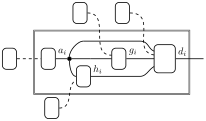
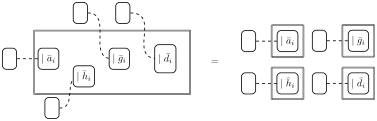

import time
import pandas as pd
from scipy.stats import beta as beta_dist
import jax
import jax.numpy as jnp
from jax import random
from jax.scipy.stats import norm, bernoulli
from jax.scipy.optimize import minimize
import numpyro
import numpyro.distributions as dist
from numpyro.infer import MCMC, NUTS
import arviz as az
rng_key = random.PRNGKey(0)Exercise 9: Fitting hybrid models
\[ \def\then{\mathbin{;}} \def\kernel{\rightsquigarrow} \def\swap{\mathsf{swap}} \def\id{\mathsf{id}} \def\cp{\mathsf{copy}} \def\del{\mathsf{del}} \def\ivmark#1{[\![#1]\!]} \]
In this exercise we fit a hybrid model to the stroke dataset from Exercise 3.
The main conceptual point of the sheet is in Task 1: as soon as the dataset is fully observed, conditioning erases every data wire and the joint posterior over the four parameter blocks factors into a product of four independent posteriors, one per box. Inference therefore decomposes box-by-box, and we are free to pick a different method for each:
- Task 2 fits the hypertension table in closed form using Beta–Bernoulli conjugacy.
- Task 3 fits the glucose regression with NumPyro / NUTS.
- Task 4 (optional) fits the logistic regression by Laplace approximation implemented from scratch in JAX using
jax.grad,jax.hessian, andjax.scipy.optimize.minimize.
By the end you will have one fitted hybrid model, three different inference techniques in your toolbox, and a concrete comparison of their cost and accuracy.
Setup
NotePrerequisites: Python libraries
This exercise uses:
- pandas — tabular data.
- SciPy — Beta quantiles for the closed-form posterior in Task 2.
- JAX — numerical backend, autodiff, and optimizer for Task 4.
- NumPyro — probabilistic programming and NUTS in Tasks 3 and 4d.
- ArviZ — MCMC diagnostics and posterior summaries.
- matplotlib — plotting.
Install via:
pip install pandas scipy jax numpyro arviz matplotlibThe dataset
We work with the same Stroke Prediction Dataset used in Exercise 3, but using different variables:
| Variable | Values | Encoding |
|---|---|---|
age |
young (<35), middle (35–65), senior (≥65) | 0, 1, 2 |
hyp |
no, yes | 0, 1 |
log_glucose |
\(\log(\text{avg\_glucose\_level})\), in \(\log\) mg/dL | continuous |
heart_disease |
no, yes | 0, 1 |
The prepared training and test splits are:
- stroke_train_prepared.csv — training data (4088 patients)
- stroke_test_prepared.csv — test data (1022 patients)
Load the training data:
df = pd.read_csv("../data/exercise-9/stroke_train_prepared.csv")
print(f"N = {len(df)} patients")
df.head()N = 4088 patients| age | hyp | log_glucose | heart_disease | |
|---|---|---|---|---|
| 0 | 1 | 0 | 4.237145 | 0 |
| 1 | 0 | 0 | 4.806068 | 0 |
| 2 | 2 | 0 | 4.704291 | 0 |
| 3 | 1 | 0 | 4.180675 | 0 |
| 4 | 0 | 0 | 4.410857 | 0 |
Task 1. A hybrid model
We model the four variables with one box per kernel. The corresponding kernels mix discrete and continuous output types, so we pick a different family for each box:
| Box | Signature | Kernel type |
|---|---|---|
age |
\(I \kernel \mathsf{Age}\) | general discrete (categorical on 3 values) |
hyp |
\(\mathsf{Age} \kernel \mathsf{Hyp}\) | general discrete (one categorical per age) |
glu |
\(\mathsf{Age} \kernel \mathbb{R}\) | linear regression (Gaussian output) |
heart |
\(\mathsf{Age} \times \mathsf{Hyp} \times \mathbb{R} \kernel \mathsf{Heart}\) | logistic regression |
By a “general discrete” kernel we mean one specified by a full table of output probabilities. The two regression kernels are the canonical GLMs from hybrid-models.qmd: a Gaussian likelihood with a linear predictor for log_glucose, and a Bernoulli likelihood with sigmoid response for heart_disease.
Task 1a. Draw the string diagram for the model, taking the kernel parameters as known. The diagram should have four boxes wired up according to the signatures above.
TipSolution (Task 1a)
Task 1b. Now make the parameters of each box explicit. Promote each kernel to a parameterized kernel by adding a parameter input wire, and attach a prior to that wire.
TipSolution (Task 1b)

Task 1c. Suppose we observe a fully complete dataset \((\bar a_i, \bar h_i, \bar g_i, \bar d_i)_{i=1}^N\). Condition the parameterized model from Task 1b on all four observed variables and show that the resulting diagram falls apart into four parallel components, one per box. Conclude that each box can be fit on its own.
Hint. Recall that conditioning on a variable removes every wire carrying that variable and replaces each affected kernel by a likelihood weight.
TipSolution (Task 1c)
Conditioning on \(\bar a_{1:N}\), \(\bar h_{1:N}\), \(\bar g_{1:N}\), \(\bar d_{1:N}\) erases every data wire in the diagram from Task 1b. Each of the four boxes is replaced by a weight corresponding to the per-datum likelihoods.

Algebraically, the joint posterior factors as
\[ \begin{aligned} p(\theta_{\text{age}}, \theta_{\text{hyp}}, \theta_{\text{glu}}, \theta_{\text{heart}} \mid \text{data}) \;\propto\; & \;p_{\text{age}}(\theta_{\text{age}}) \, \prod_{i=1}^{N} \ell_{\text{age}}(\bar a_i \mid \theta_{\text{age}}) \\ \times\;& \;p_{\text{hyp}}(\theta_{\text{hyp}}) \, \prod_{i=1}^{N} \ell_{\text{hyp}}(\bar h_i \mid \bar a_i, \theta_{\text{hyp}}) \\ \times\;& \;p_{\text{glu}}(\theta_{\text{glu}}) \, \prod_{i=1}^{N} \ell_{\text{glu}}(\bar g_i \mid \bar a_i, \theta_{\text{glu}}) \\ \times\;& \;p_{\text{heart}}(\theta_{\text{heart}}) \, \prod_{i=1}^{N} \ell_{\text{heart}}(\bar d_i \mid \bar a_i, \bar h_i, \bar g_i, \theta_{\text{heart}}). \end{aligned} \]
This decomposition depends critically on having a fully observed dataset. If, for example, some entries of log_glucose were missing, the data wire for log_glucose would only be partially cut, and the glu and heart boxes would remain linked.
Task 2. Fit the hypertension kernel
We now focus on the hypertension box. The most general way to model this is to say that for each age category \(a \in \{0, 1, 2\}\), the kernel \(\theta_{\text{hyp}, a}\) is a Bernoulli distribution on \(\{0, 1\}\) with parameters \(p_a := P(\text{hyp} = 1 \mid \text{age} = a)\). Hence, to fit this kernel, we need to infer the three parameters \(p_0, p_1, p_2\) from the data. We will do so in closed form using the Beta-Bernoulli conjugacy.
For each fixed age \(a\), the kernel \(\theta_{\text{hyp}, a}\) is a Bernoulli distribution. If we put a \(\mathrm{Beta}(\alpha_a, \beta_a)\) prior on \(p_a\), then the posterior is a \(\mathrm{Beta}\) distribution as well: \[ p_a \mid \text{data} \;\sim\; \mathrm{Beta}\bigl(\alpha_a + n_{a, 1},\; \beta_a + n_{a, 0}\bigr), \]
where \(n_{a, h}\) is the number of training patients with age \(a\) and hypertension status \(h\). The prior parameters \(\alpha_a\) and \(\beta_a\) act as pseudo-counts of hypertensives and non-hypertensives in age stratum \(a\) that are simply augmented by the observed counts. For simplicity, we take \(\alpha_a = \beta_a = 1\) for all \(a\), which corresponds to a uniform prior on \(p_a\).
NoteMore than two outputs: Dirichlet–Categorical
If hyp had \(K > 2\) possible values, the same idea would still work, with Beta replaced by Dirichlet and Bernoulli replaced by Categorical. Putting a \(\mathrm{Dirichlet}(\alpha_1,
\ldots, \alpha_K)\) prior on each row of the kernel and observing \(n_{a, k}\) patients in age stratum \(a\) with \(\text{hyp} = k\), the posterior on row \(a\) is
\[ \theta_{\text{hyp}, a} \mid \text{data} \;\sim\; \mathrm{Dirichlet}\bigl(\alpha_1 + n_{a, 1},\, \ldots,\, \alpha_K + n_{a, K}\bigr). \]
The prior parameters \(\alpha_k\) act as pseudo-counts that are simply augmented by the observed counts. See Example 7.3 in practical.qmd for the derivation and discussion. The Beta–Bernoulli case used in this task is the \(K = 2\) specialization.
Task 2a. For each \(a \in \{0, 1, 2\}\), count \(n_{a, 0}\) and \(n_{a, 1}\) in the training data, and derive the \(\mathrm{Beta}\) posterior. Report its mean together with a 90% equal-tailed credible interval for \(p_a\). Present the results in a table indexed by age category.
Hint: Use pd.crosstab to get the counts \(n_{a, h}\) in one line. Use scipy.stats.beta to compute the credible intervals from the Beta parameters.
TipSolution (Task 2a)
We use pd.crosstab to get the counts of hypertensives and non-hypertensives in each age category:
counts = pd.crosstab(df["age"], df["hyp"]) # rows: age, cols: hyp value
n_a0 = counts[0].to_numpy()
n_a1 = counts[1].to_numpy()The mean of a \(\mathrm{Beta}(\alpha, \beta)\) distribution is \(\alpha / (\alpha + \beta)\). This is exactly the relative frequency of the augmented counts. The 90% equal-tailed credible interval can be computed with scipy.stats.beta.ppf at the 5% and 95% quantiles. Both operations broadcast over the three age strata:
a_post = 1 + n_a1 # Beta(1 + n_{a,1}, 1 + n_{a,0})
b_post = 1 + n_a0
mean = a_post / (a_post + b_post)
lo = beta_dist.ppf(0.05, a_post, b_post)
hi = beta_dist.ppf(0.95, a_post, b_post)
pd.DataFrame({
"age": [0, 1, 2],
"n_a0": n_a0, "n_a1": n_a1,
"mean": mean, "5%": lo, "95%": hi,
}).round(3)| age | n_a0 | n_a1 | mean | 5% | 95% | |
|---|---|---|---|---|---|---|
| 0 | 0 | 1444 | 17 | 0.012 | 0.008 | 0.017 |
| 1 | 1 | 1605 | 195 | 0.109 | 0.097 | 0.121 |
| 2 | 2 | 642 | 185 | 0.224 | 0.201 | 0.249 |
Task 2b (Optional — derivation). Derive the Beta–Bernoulli update formula. Let \[ \begin{aligned} p &\sim \mathrm{Beta}(\alpha, \beta), \\ h_i &\sim \mathrm{Bernoulli}(p), \quad i = 1, \ldots, n. \end{aligned} \]
Show that the posterior distribution of \(p\) given \(h_{1:n}\) is \[ p \mid h_{1:n} \;\sim\; \mathrm{Beta}\bigl(\alpha + \sum_i h_i,\; \beta + n - \sum_i h_i\bigr). \]
Strategy. Write down the joint density of \(p\) together with the observed hypertension statuses \(h_1, \ldots, h_{n}\). Then look at it as a function of \(p\) and identify the form. No integrals are required: the normalizing constant is whatever it must be for a density to integrate to one.
TipSolution (Task 2b, optional)
Let \(s := \sum_i h_i\) be the number of successes. The joint density of \(p\) and \(h_{1:n}\), obtained by copy-composing the prior and the Bernoulli likelihood, is
\[ \begin{aligned} \ell(p, h_{1:n}) &= \ell_{\mathrm{Beta}}(p \mid \alpha, \beta) \, \prod_{i=1}^{n} p^{h_i} (1 - p)^{1 - h_i} \\ &= \frac{p^{\alpha - 1} (1 - p)^{\beta - 1}}{B(\alpha, \beta)} \, p^{\sum_i h_i} (1 - p)^{\sum_i (1 - h_i)} \\ &= \frac{p^{\alpha - 1} (1 - p)^{\beta - 1}}{B(\alpha, \beta)} \, p^{s} (1 - p)^{n - s} \\ &= \frac{p^{\alpha + s - 1} (1 - p)^{\beta + (n - s) - 1}}{B(\alpha, \beta)}. \end{aligned} \]
As a function of \(p\) for fixed data, this has the form of an (unnormalized) \(\mathrm{Beta}(\alpha + s,\; \beta + n - s)\) density. Since the posterior must integrate to one and there is only one normalizing constant that achieves this, we conclude
\[ p \mid h_{1:n} \;\sim\; \mathrm{Beta}\bigl(\alpha + s,\; \beta + n - s\bigr). \]
The prior parameters \(\alpha\) and \(\beta\) act as pseudo-counts of successes and failures that are simply augmented by the observed counts.
Task 3. Fit glucose with NumPyro
To fit the log glucose kernel, we use NumPyro to run NUTS. Since there is only one discrete input variable (age), we are effectively fitting one distribution per age category. We model each distribution as a Gaussian with its own mean and noise:
\[ \begin{aligned} \mu_a &\sim \mathrm{Normal}(4.5,\; 1.0), \quad a \in \{0, 1, 2\}, \\ \sigma_a &\sim \mathrm{HalfNormal}(1.0), \quad a \in \{0, 1, 2\}, \\ g_i &\sim \mathrm{Normal}(\mu_{a_i},\; \sigma_{a_i}), \quad i = 1, \ldots, N. \end{aligned} \]
The prior mean \(4.5\) is roughly the log of typical fasting glucose in mg/dL (\(e^{4.5} \approx 90\)). The prior sd of \(1.0\) is very weakly informative on this scale. The HalfNormal(1.0) prior on each \(\sigma_a\) similarly allows a wide range of noise levels. Because Task 1c showed that this box decouples from the rest of the model once all variables are observed, we may treat \(a_i\) as a known input and put priors only on \(\theta_{\text{glu}} = (\mu, \sigma)\).
Task 3a. Write this model as a NumPyro function glu_model(age, log_glu=None) and run NUTS on the training data. Use 1000 warmup draws, 2000 post-warmup draws, 4 chains. Convert the result to ArviZ with az.from_numpyro.
TipSolution (Task 3a)
age = jnp.array(df["age"].to_numpy())
log_glu = jnp.array(df["log_glucose"].to_numpy())def glu_model(age, log_glu=None):
with numpyro.plate("age_cells", 3):
mu = numpyro.sample("mu", dist.Normal(4.5, 1.0))
sigma = numpyro.sample("sigma", dist.HalfNormal(1.0))
numpyro.sample("obs", dist.Normal(mu[age], sigma[age]), obs=log_glu)kernel = NUTS(glu_model)
mcmc = MCMC(kernel, num_warmup=1000, num_samples=2000, num_chains=4, progress_bar=False)
mcmc.run(random.PRNGKey(0), age, log_glu)
dt_glu = az.from_numpyro(mcmc)Task 3b. Look at az.summary(dt_glu). Check the convergence diagnostics. Comment on the pattern in the posterior cell means. Compare the inferred values to the empirical means and standard deviations of log-glucose in each age category.
TipSolution (Task 3b)
az.summary(dt_glu)| mean | sd | eti89_lb | eti89_ub | ess_bulk | ess_tail | r_hat | mcse_mean | mcse_sd | |
|---|---|---|---|---|---|---|---|---|---|
| mu[0] | 4.5068 | 0.00708 | 4.5 | 4.5 | 12195 | 6402 | 1.00 | 6.4e-05 | 4.6e-05 |
| mu[1] | 4.6128 | 0.0087 | 4.6 | 4.6 | 10651 | 6448 | 1.00 | 8.5e-05 | 6e-05 |
| mu[2] | 4.7077 | 0.0154 | 4.7 | 4.7 | 11014 | 6473 | 1.00 | 0.00015 | 0.0001 |
| sigma[0] | 0.26916 | 0.00491 | 0.26 | 0.28 | 12306 | 6600 | 1.00 | 4.4e-05 | 3e-05 |
| sigma[1] | 0.3679 | 0.00612 | 0.36 | 0.38 | 11699 | 5846 | 1.00 | 5.7e-05 | 3.9e-05 |
| sigma[2] | 0.4469 | 0.011 | 0.43 | 0.46 | 11620 | 6445 | 1.00 | 0.0001 | 7.4e-05 |
Diagnostics. All six \(\hat R\) values are \(1.00\), and the bulk and tail effective sample sizes are several thousand for every parameter. We have a clean fit and can trust the posterior summaries.
Cell means. Posterior mean log-glucose increases monotonically with age: \(\mu_0 \approx 4.51 < \mu_1 \approx 4.61 < \mu_2 \approx 4.71\). The 89% credible intervals are narrow (width \(\lesssim 0.05\)) and clearly non-overlapping across cells. Hence, age seems to shift average log-glucose upward.
Cell noise. The within-cell spread also grows with age: \(\sigma_0 \approx 0.27\), \(\sigma_1 \approx 0.37\), \(\sigma_2 \approx 0.45\). This is a real feature of the data: older patients have not just higher but also more variable glucose.
Comparison with the empirical estimates. The empirical mean and standard deviation of log_glucose in each age category are:
df.groupby("age")["log_glucose"].agg(["mean", "std", "count"]).round(3)| mean | std | count | |
|---|---|---|---|
| age | |||
| 0 | 4.507 | 0.269 | 1461 |
| 1 | 4.613 | 0.368 | 1800 |
| 2 | 4.708 | 0.446 | 827 |
The posterior means of \(\mu_a\) and \(\sigma_a\) agree with the empirical mean and sd to three decimal places. With \(N \approx 4000\) observations and very weak priors, NUTS is doing nothing more than recovering the maximum-likelihood estimates. Hence, running MCMC for this kernel is overkill. The advantage of the Bayesian formulation is that it lets us inject domain knowledge which the plain ML estimator cannot accommodate.
Task 4 (Optional). Fitting heart disease by Laplace approximation
The heart disease box has binary output and mixed inputs. We model it using a logistic regression. Because Task 1c shows that this box decouples from the rest of the model under full observation, we again fit its parameters in isolation.
Instead of using NumPyro, we will fit this box with a Laplace approximation (Definition 7.2), implemented in plain JAX. This will give us a chance to illustrate optimization and automatic differentiation tools. In particular, we will use jax.grad, jax.hessian, jax.jit, and jax.scipy.optimize.minimize, which together let us optimize the log-posterior and extract its curvature without ever writing a gradient or Hessian by hand.
\[ \begin{aligned} b_0 &\sim \mathrm{Normal}(-3, 2), \\ b_{\text{age}, 0} &= 0 \quad \text{(reference)}, \\ b_{\text{age}, 1},\, b_{\text{age}, 2} &\sim \mathrm{Normal}(0, 1), \\ b_{\text{hyp}},\, b_{\text{glu}} &\sim \mathrm{Normal}(0, 1), \\ p_i &= \mathrm{sigmoid}(b_0 + b_{\text{age}, a_i} + b_{\text{hyp}}\, h_i + b_{\text{glu}}\,(g_i - 4.5)), \\ d_i &\sim \mathrm{Bernoulli}(p_i), \quad i = 1, \ldots, N. \end{aligned} \]
We use reference coding for the age effect, fixing \(b_{\text{age}, 0} = 0\), so that the remaining age coefficients are identifiable contrasts against the young category. The shift \(-4.5\) centers log-glucose at the prior mean from Task 3, which improves numerical conditioning for the optimizer.
Task 4a. Write the unnormalized log-posterior as a JAX function log_posterior(theta, age, hyp, log_glu, heart) returning the scalar log-density of the posterior. Your function should go through the model and sum up all log-density contributions. You may drop any additive constants that do not depend on the parameters.
Hint. Use jnp.concatenate to prepend the reference parameter \(b_{\text{age}, 0} = 0\) to \(b_{\text{age}, 1:2}\). The log-densities of the Normal prior and the Bernoulli likelihood are available as jax.scipy.stats.norm.logpdf and jax.scipy.stats.bernoulli.logpmf. The sigmoid function is jax.nn.sigmoid.
TipSolution (Task 4a)
We follow the model line by line: each \(\mathrm{Normal}\) prior contributes a norm.logpdf term, the sigmoid turns the linear predictor into the success probability \(p_i\), and the Bernoulli observation contributes a bernoulli.logpmf term.
age = jnp.array(df["age"].to_numpy())
hyp = jnp.array(df["hyp"].to_numpy())
log_glu = jnp.array(df["log_glucose"].to_numpy())
heart = jnp.array(df["heart_disease"].to_numpy())
def log_posterior(theta, age, hyp, log_glu, heart):
b0, b_age_free, b_hyp, b_glu = theta[0], theta[1:3], theta[3], theta[4]
# Reference-coded age effect: b_age[0] = 0.
b_age = jnp.concatenate([jnp.zeros(1), b_age_free])
# Log-prior.
lp = norm.logpdf(b0, -3.0, 2.0)
lp += jnp.sum(norm.logpdf(b_age_free, 0.0, 1.0))
lp += norm.logpdf(b_hyp, 0.0, 1.0)
lp += norm.logpdf(b_glu, 0.0, 1.0)
# Bernoulli log-likelihood with sigmoid link.
logits = b0 + b_age[age] + b_hyp * hyp + b_glu * (log_glu - 4.5)
ll = jnp.sum(bernoulli.logpmf(heart, jax.nn.sigmoid(logits)))
return lp + llSanity-check at \(\theta = \mathbf{0}\):
float(log_posterior(jnp.zeros(5), age, hyp, log_glu, heart))-2840.000244140625Task 4b. Find the MAP estimator \(\hat\theta = \arg\max_\theta \log\ell(\theta \mid \text{data})\) by minimizing the negative log-posterior with jax.scipy.optimize.minimize, method "BFGS". Initialize at \(\theta_0 = \mathbf{0}\). Report \(\hat\theta\), the value \(\log\ell(\hat\theta)\), and the wall time of the optimization (we will compare this to NUTS in Task 4d).
BFGS will call the objective and its (auto-diffed) gradient many times. Wrap the objective with fixed data arguments in jax.jit so it is compiled once and then runs as fast native code on every subsequent call:
neg_log_posterior = jax.jit(
lambda theta: -log_posterior(theta, age, hyp, log_glu, heart)
)
TipSolution (Task 4b)
We time the optimization so we can compare it later to the cost of full MCMC. block_until_ready() forces JAX to finish its asynchronous dispatch before we stop the clock.
neg_log_posterior = jax.jit(
lambda theta: -log_posterior(theta, age, hyp, log_glu, heart)
)
t0 = time.perf_counter()
result = minimize(neg_log_posterior, jnp.zeros(5), method="BFGS")
theta_hat = result.x.block_until_ready()
t_bfgs = time.perf_counter() - t0
names = ["b0", "b_age[1]", "b_age[2]", "b_hyp", "b_glu"]
for name, value in zip(names, theta_hat):
print(f"{name:>10} = {float(value): .4f}")
print(f"log posterior at MAP = {-float(result.fun):.4f}")
print(f"BFGS wall time: {t_bfgs:.2f} s") b0 = -5.3579
b_age[1] = 1.9953
b_age[2] = 3.5293
b_hyp = 0.1125
b_glu = 0.9010
log posterior at MAP = -704.7112
BFGS wall time: 1.14 sThe optimizer reports result.success = False (status 3, line-search abort) but the gradient norm at \(\hat\theta\) is below \(10^{-2}\), so we have effectively found the MAP:
float(jnp.linalg.norm(jax.grad(neg_log_posterior)(theta_hat)))0.003995549399405718Task 4c. Now turn the MAP into a full Gaussian posterior approximation \[
p(\theta \mid \text{data}) \;\approx\; \mathcal{N}(\hat\theta,\; \Sigma),
\qquad \Sigma = H^{-1},\quad H = -\nabla^2 \log\ell(\hat\theta).
\] Compute the Hessian with jax.hessian evaluated at \(\hat\theta\), negate it, and invert to obtain \(\Sigma\). Then report:
- The posterior mean \(\hat\theta\) and marginal sd \(\sqrt{\mathrm{diag}(\Sigma)}\) for each of the five coefficients.
- An 89% credible interval \(\hat\theta_k \pm 1.598\,\sqrt{\Sigma_{kk}}\) for each coefficient.
- The wall time for the Hessian computation and inversion, to be added to the BFGS time from Task 4b for the comparison with NUTS in Task 4d.
JAX provides exact derivatives of any scalar Python function f it can trace , via the function transformations jax.grad and jax.hessian: jax.grad(f) returns a new function that computes \(\nabla f\), and jax.hessian(f) returns one that computes \(\nabla^2 f\). Hence to compute \(H\) at \(\hat\theta\), we simply compose the transformation with the function:
H = jax.hessian(neg_log_posterior)(theta_hat)We can invert \(H\) with jnp.linalg.inv to get \(\Sigma\).
TipSolution (Task 4c)
The Hessian of the negative log-posterior at \(\hat\theta\) already is \(H = -\nabla^2 \log\ell(\hat\theta)\), so we can invert it directly. We again time the computation:
t0 = time.perf_counter()
H = jax.hessian(neg_log_posterior)(theta_hat)
cov = jnp.linalg.inv(H)
cov.block_until_ready()
t_hess = time.perf_counter() - t0
sds = jnp.sqrt(jnp.diag(cov))
z89 = 1.5982 # 0.945 quantile of N(0, 1)
names = ["b0", "b_age[1]", "b_age[2]", "b_hyp", "b_glu"]
laplace_table = pd.DataFrame({
"param": names,
"mean": theta_hat,
"sd": sds,
"lb89": theta_hat - z89 * sds,
"ub89": theta_hat + z89 * sds,
}).round(3)
print(f"Hessian + inversion wall time: {t_hess:.2f} s")
laplace_tableHessian + inversion wall time: 1.04 s| param | mean | sd | lb89 | ub89 | |
|---|---|---|---|---|---|
| 0 | b0 | -5.358 | 0.328 | -5.883 | -4.833 |
| 1 | b_age[1] | 1.995 | 0.346 | 1.443 | 2.548 |
| 2 | b_age[2] | 3.529 | 0.341 | 2.984 | 4.074 |
| 3 | b_hyp | 0.112 | 0.182 | -0.179 | 0.404 |
| 4 | b_glu | 0.901 | 0.165 | 0.637 | 1.165 |
Interpretation. All three age and glucose coefficients are positive and their 89% intervals exclude zero, confirming the clinically expected direction: older patients and patients with higher log-glucose have substantially higher heart-disease log-odds. The two age contrasts are large and ordered, \(\hat b_{\text{age},1} \approx 2.0 < \hat b_{\text{age},2} \approx 3.5\), so the senior category carries the strongest risk.
The hypertension coefficient \(\hat b_{\text{hyp}} \approx 0.11\) is positive but its 89% interval \([-0.18,\, 0.40]\) contains zero. Once age and glucose are in the model, hypertension carries little additional information about heart disease — most likely because hypertension is already strongly correlated with both age and elevated glucose, so its marginal contribution is small.
Task 4d. The Laplace approximation replaces the posterior by the Gaussian that best matches its curvature at the mode. Whether that is a good approximation can only be checked against a more expensive method that samples from the true posterior. Re-fit the same logistic regression in NumPyro with NUTS (1000 warmup, 2000 post-warmup, 4 chains) and compare the posterior means and 89% intervals to the Laplace table from Task 4c. Also time the NUTS run and compare it to the Laplace cost from Tasks 4b–c.
TipSolution (Task 4d)
The NumPyro version of the model mirrors the JAX log-posterior. We use a numpyro.plate for the two free age contrasts and pass the linear predictor to dist.Bernoulli(logits=...), which is the direct analogue of sigmoid + bernoulli.logpmf.
def heart_model(age, hyp, log_glu, heart=None):
# Priors
b0 = numpyro.sample("b0", dist.Normal(-3.0, 2.0))
with numpyro.plate("age_free", 2):
b_age_free = numpyro.sample("b_age_free", dist.Normal(0.0, 1.0))
b_age = jnp.concatenate([jnp.zeros(1), b_age_free])
b_hyp = numpyro.sample("b_hyp", dist.Normal(0.0, 1.0))
b_glu = numpyro.sample("b_glu", dist.Normal(0.0, 1.0))
# Logistic regression likelihood with sigmoid link.
logits = b0 + b_age[age] + b_hyp * hyp + b_glu * (log_glu - 4.5)
numpyro.sample("obs", dist.Bernoulli(logits=logits), obs=heart)kernel = NUTS(heart_model)
mcmc = MCMC(kernel, num_warmup=1000, num_samples=2000,
num_chains=4, progress_bar=False)
t0 = time.perf_counter()
mcmc.run(random.PRNGKey(0), age, hyp, log_glu, heart)
t_nuts = time.perf_counter() - t0
dt_heart = az.from_numpyro(mcmc)print(f"NUTS wall time: {t_nuts:.2f} s")
az.summary(dt_heart).round(3)NUTS wall time: 20.67 s| mean | sd | eti89_lb | eti89_ub | ess_bulk | ess_tail | r_hat | mcse_mean | mcse_sd | |
|---|---|---|---|---|---|---|---|---|---|
| b0 | -5.41 | 0.331 | -6 | -4.9 | 2838 | 3149 | 1.00 | 0.0063 | 0.0044 |
| b_age_free[0] | 2.03 | 0.347 | 1.5 | 2.6 | 2923 | 3255 | 1.00 | 0.0065 | 0.0045 |
| b_age_free[1] | 3.57 | 0.345 | 3 | 4.1 | 2871 | 3257 | 1.00 | 0.0065 | 0.0045 |
| b_glu | 0.903 | 0.165 | 0.64 | 1.2 | 4430 | 4152 | 1.00 | 0.0025 | 0.0018 |
| b_hyp | 0.112 | 0.18 | -0.18 | 0.4 | 4916 | 4435 | 1.00 | 0.0026 | 0.0018 |
Agreement. Posterior means and standard deviations from NUTS match the Laplace table closely on every coefficient and the \(\hat R\) values are all \(1.00\) with effective sample sizes in the thousands. Laplace is essentially exact here because the posterior is unimodal and, with \(N \approx 4000\) binary observations, very nearly Gaussian.
Cost comparison. Laplace ran in \(\approx 1.5\) s on this machine, versus \(\approx 15\) s for the four NUTS chains. The gap grows with the parameter dimension: BFGS and one Hessian solve cost \(O(d^3)\) per evaluation of the model, while NUTS costs \(O(d)\) per leapfrog step but needs thousands of such steps per chain.
For unimodal log-concave models like this one, Laplace cheap and accurate. To get an exact approximation, we can use the Laplace estimate as a proposal distribution for importance sampling.